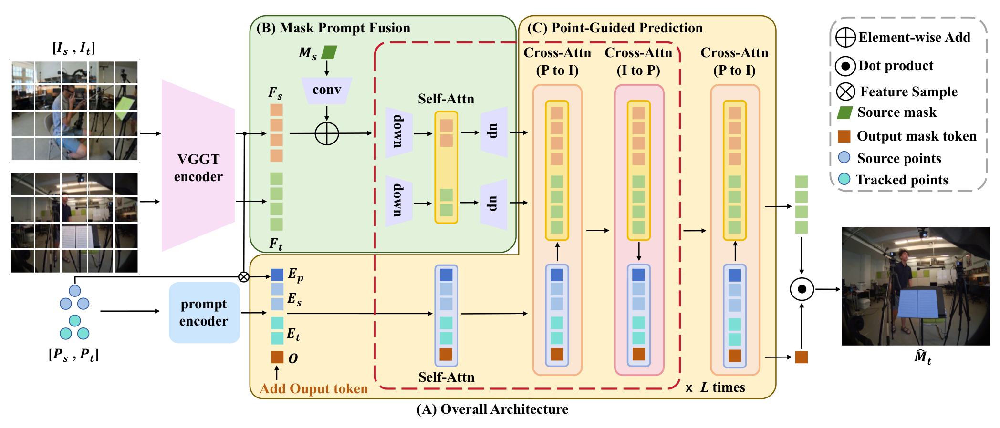
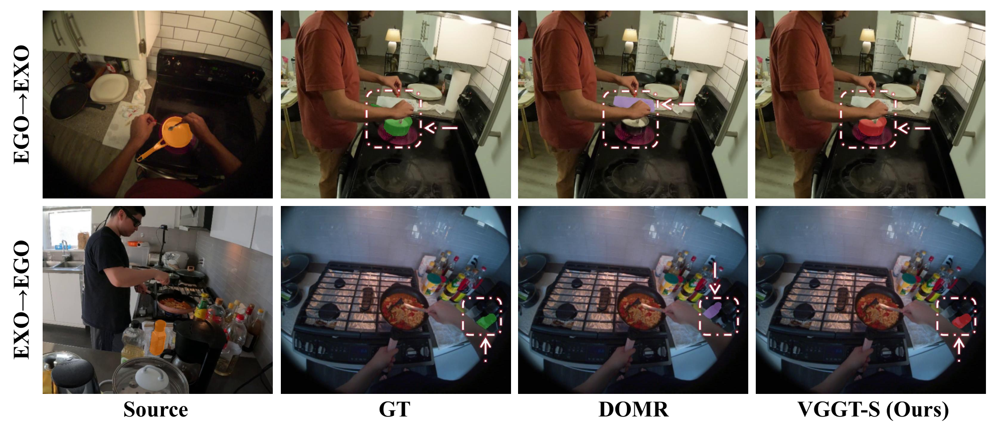
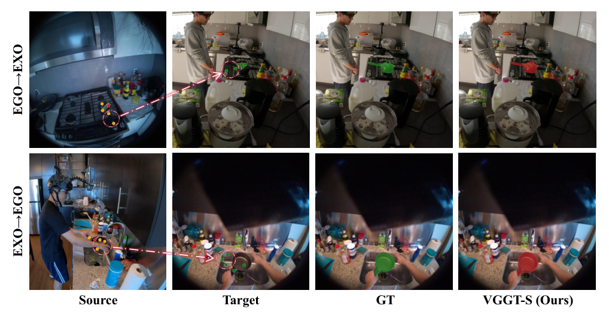

VGGT-Segmentor 深读：VGGT 的逐点投影会漂、可注意力却很稳——凭什么把"稳的对齐"榨成"准的掩码"？
导读。VGGT 是个"几何一致"的多视角大模型：一次前馈联合预测深度、相机参数、点图，给跨视角特征对齐打了很好的底子。可一旦你想拿它直接做跨视角实例分割——给定 ego（第一人称）一张图里某个物体的 mask，要在 exo（第三人称）那张图里把同一个物理物体抠出来——它会在一个意想不到的地方翻车：VGGT 的逐像素点投影会系统性漂移（把锅投到砧板上、把瓶子认成旁边那只长得像的瓶子），但它内部的 object-level attention 却仍然稳稳地落在目标大致区域。这就是本文的核心张力：同一个模型，"逐点重投影"不可信，"注意力对齐"却可信——你该信哪个、又怎么把"可信的那个"榨成一张像素级准确的掩码，而不被"不可信的那个"带偏？VGGT-Segmentor（VGGT-S）的答案是冻住 VGGT、只加一个轻量 Union Segmentation Head，把漂移的稀疏点降格成"引导用的 prompt"而非"答案"，再靠特征融合做空间共识、靠迭代修边把掩码拉回几何一致的位置；外加一招单图自监督训练彻底甩掉配对标注。Ego–Exo4D 上 67.7%（Ego→Exo）/ 68.0%（Exo→Ego）IoU 创 SOTA，连"零配对标注"的预训练版都反超了一批全监督方法。

一、核心问题：投影会漂、注意力却稳，这种"半可信"的几何先验该怎么用？
问题。跨视角实例分割难在哪？ego 相机贴着操作者的手、exo 相机远在另一个高度甚至角度，同一个物体在两张图里尺度、视角、遮挡全变了——ego 帧常被手和工具挡住，exo 帧里又塞满了长得差不多的干扰物。直接做逐像素匹配天然不稳。早期路线要么靠语义一致性、要么塞个大语言模型补上下文，但都绕开了几何结构与空间关系，于是遇到"两只几乎一样的瓶子"就只能猜。
引导。VGGT 看起来是救星：它是几何驱动的大 transformer，联合推断深度/相机/点图，跨视角特征天然对齐。一个朴素想法是——既然 VGGT 能把 source 的点"投"到 target，那把 source mask 里的点全投过去，连起来不就是 target mask 了？本文恰恰证明这条捷径是错的。图 1 显示：在 ego–exo 这种强遮挡 + 大视角变化下，逐点投影会系统性漂移；可耐人寻味的是，同样这些点的内部注意力却仍然落在正确物体上。
为什么会出现"投影漂 / 注意力稳"的撕裂？（这里用动机先行、并从两个角度交叉印证，是全篇机制的锚点。）
- 自上而下的直觉。"逐点重投影"是一个点级、需要精确深度与精确对应的任务：遮挡让目标点在 target 里根本不可见，大基线让深度的小误差被放大成像素级的大偏移，于是单点投影的方差爆炸。而"object-level attention"是一个区域级、软聚合的量：它只需要"这一团 token 大致对上那一团 token"，对单点深度误差天然鲁棒。同一个表征，在"点精度"这个尺度上崩，在"区域聚合"这个尺度上稳——这不矛盾，是两个不同粒度的读出口。
- 自下而上的旁证（后文表 3 会兑现）。如果"投影"本身可信，那把更多点投过去应该一路涨；可消融显示点数从 1→5 涨 6.2 IoU、5→9 只涨 0.6——稀疏锚点足矣，密集投影并不带来对应的密集收益。这反过来说明：点的价值在于"提供少量几何锚"，而不在于"逐点拼出掩码"。
回答（立题）。于是核心问题变得很具体：把 VGGT 的几何先验当成"半可信"——区域对齐可信、逐点投影不可信——该怎么设计读出头，让可信的部分主导、不可信的部分只做弱引导？VGGT-S 的回答是：①冻住 VGGT，只加轻量头（不破坏已学好的几何一致性）；②把漂移的投影点降级成稀疏 prompt，而非掩码答案；③靠双向特征融合做"空间共识"、靠迭代修边把掩码拉回几何一致位置。
Takeaway：本文真正的贡献不是"又一个分割头"，而是对一个强几何基座的"可信边界"的精确判定——指出 VGGT 的注意力能用、逐点投影不能照搬，并据此把"不可信的输出"系统地降格使用。这一步判定，比任何模块都更值钱。
二、贡献拆解：三件事，分别对应"半可信"的三种用法
论文自陈三条贡献，我按"它们各自如何处理 VGGT 的半可信输出"重排，方便对上后文机制：
- VGGT-S 框架：一个几何增强的跨视角分割框架，充分利用 VGGT 的多视角几何表征，但冻结编码器、只训练新头——把"可信的几何对齐"原封保留。
- Union Segmentation Head：三阶段协同——Mask Prompt Fusion（把 source mask 注入双视角特征，做区域级共识）、Point-Guided Prediction（把漂移的投影点当稀疏 prompt 弱引导）、Mask Refinement（迭代修边、补遮挡）。三阶段正好对应"用注意力 / 弱用投影 / 修不可信残差"。
- Single-Image Self-Supervised Training：单图自监督训练，去掉配对标注的依赖，让 Ego→Exo / Exo→Ego 都能在没有跨视角对应监督的情况下训练并强泛化。
读者侧判断（与作者主张分开）。第 2 条是工程主体，但第 1 条"冻结编码器"和第 3 条"单图自监督"才是让这套方案可扩展的关键：前者把训练代价压在轻量头上，后者把数据代价从"昂贵的跨视角配对"换成"任意单图 + 离线分割器伪标"。两者合起来，才支撑得起"correspondence-free 预训练版反超全监督"这个最反直觉的结果。
三、数据：Ego–Exo4D 的对应基准长什么样
主实验用 Ego-Exo4D 的 ego–exo correspondence 基准：同步的第一/第三人称专业技能演示视频。规模与构成（均为论文披露数字）：
| 项目 | 数值 / 说明 |
|---|---|
| 标注 takes | 1,335 |
| 目标物体数 | 5,566 |
| 掩码总量（1 FPS 采样） | 180 万（其中 ego 74.2 万、exo 110 万） |
| 平均每视频 | 约 5.5 个物体 / 173 帧每 track |
| 物体类别 | 工具、相关环境物件、人体部位 |
| 划分 / 指标 | 官方 train/val 划分；指标为预测掩码与真值掩码的 mean IoU |
泛化测试另用两个数据集：MvMHAT（多视角多人关联与跟踪，作泛化微调验证）与 MAVREC（多视角航拍户外，细节在补充材料，正文未给定量）。论文未说明 Ego-Exo4D 各类别的精细分布。
Takeaway：这是个"一张扫描里多个物体、且物体之间长得像"的高干扰基准——正好暴露"无几何约束的方法会认错近邻同类物"的软肋，也正是几何先验该发力的地方。
四、Pipeline / 架构：冻结的 VGGT + 一个轻量 Union Segmentation Head
{kind=link}

一句话流程（Exo→Ego 为例）。给一对 source–target 图 $(I_s,I_t)$：VGGT 出 $F_s,F_t$ → source mask $M_s$ 编码并注入跨视角特征交互 → 从 $M_s$ 采一小撮代表点、经 VGGT track head 投到 target 得 $P_t$ → 这些点 prompt 引导预测 target 掩码 $\hat M_t$。训练时 VGGT 全程冻结，只优化 Union Segmentation Head，端到端但算力/显存开销极小。
五、方法 / 三阶段：怎么"信注意力、弱用投影、修残差"
5.1 Mask Prompt Fusion——把 source mask 变成跨视角的"区域共识"
动机先行。第一步要解决的不是"点准不准"，而是"target 那边到底大概在哪个区域"。所以先把 source mask 当成区域级 prompt 注进特征里，让 target 特征也拿到来自 source 物体的空间先验——这一步只用"可信的区域对齐"，完全不碰漂移的点。
5.2 Point-Guided Prediction——把漂移的投影点降级成"稀疏锚 prompt"
动机先行（全篇机制的核心一招）。现在才轮到点。但记住图 1 的教训：逐点投影会漂。所以这里绝不把投影点当掩码，而是只采极少数代表点、当作"稀疏几何锚"去引导已经做过区域共识的特征——点错一两个，区域共识能兜住；点对的那几个，提供视角/尺度鲁棒的定位线索。
5.3 Mask Refinement——把不可信残差迭代修掉
动机先行。即便有了区域共识 + 稀疏锚，边界仍可能糊、遮挡区仍可能漏。于是加一个迭代修边模块，专治"不可信的残差"：每轮重调边界、补遮挡。
5.4 单图自监督训练——把"跨视角配对标注"换成"任意单图 + 增广"
动机先行。跨视角配对标注又贵又少。能不能不用配对、只用单图就训出跨视角分割头？关键洞察：VGGT 的跨视角能力已经预训练好了，下游头要学的只是"怎么把 VGGT 特征读成掩码"——而这个读出能力，可以用"单图 + 几何增广"来模拟跨视角。
给任意图 $I$，生成增广视图 $I'$，用离线分割器（SAM）拿伪 mask $M$，要求模型在 $I'$ 上预测同一物体的掩码 $\hat M'$。增广分两族，对应 VGGT 的两种工作模式：
- VGGT-adaptive（缩放、轻微旋转、裁剪）：保留 VGGT 的点映射。此时两个视图都过 VGGT 编码器，由 track head 在 target 视图上给点 prompt——模拟"投影还算可信"的情形。
- VGGT-non-adaptive（大幅旋转、水平翻转）：严重破坏跨视角对齐、让 VGGT 失去有效对应。此时两个视图各自独立过 VGGT 编码器，并对 target 真值点加扰动来合成 prompt——模拟"投影不可信、得靠区域共识"的情形。
为什么要混两族（交叉验证式设计）。只喂 adaptive，模型会过度信任投影；只喂 non-adaptive，模型学不到"投影可信时怎么用"。混合后，模型学到一个与 VGGT 特征对齐、且对投影漂移鲁棒的掩码头——这正好覆盖真实 ego–exo 里"有时投影准、有时全漂"的整个谱系。作者在 SA-1B 的 1/20 子集上训出 correspondence-free 预训练版，直接在 Ego-Exo4D 上评测仍有竞争力（后文表 1 兑现）。
Takeaway：三阶段不是堆模块，是一条"信任度递降"的流水线——先用最可信的区域对齐定大区域（5.1），再用半可信的稀疏点做锚定（5.2），最后用迭代修边清理不可信的残差（5.3）；单图自监督（5.4）则把"跨视角"这件昂贵的事，用"单图增广模拟两种投影可信度"廉价地造了出来。
六、训练配置（均为论文披露）
| 项 | 设置 |
|---|---|
| VGGT 编码器 | 官方设置，patch size 14，全程冻结，只训 Union Segmentation Head |
| Mask Prompt Fusion | source mask 经卷积下采样到原分辨率一半，对齐 VGGT 输出特征图 |
| Point-Guided Prediction | K-Means 聚类数 = 5（匹配采样点数）；聚类只精炼一次以省训练时间 |
| 损失 | 沿用 SAM：focal + dice 线性组合，权重比 20 : 1 |
| 优化器 / LR | AdamW，初始 lr $5\times10^{-5}$，weight decay $1\times10^{-4}$ |
| 训练轮数 | 12 epochs；第 8、11 epoch 后 lr ×0.1；梯度 $L_2$ 范数裁剪到 1.0 |
| 硬件 / batch | 4× NVIDIA RTX 4090，batch size 8 |
| 推理计时 | 单 GPU 单图跑 100 次前传取均值；Ego→Exo 的额外 remapping 步在计时中略去 |
算力口径声明。论文给出"4× RTX 4090、12 epochs"，但未披露总训练时长 / GPU-hours；任何由此外推的 GPU-hours 数字都属"按论文披露数字粗略估算，不等同于实际账单"，本文不擅自给。
七、实验结果：SOTA，且"零配对标注版"反超一批全监督
主结果（表 1，全表转写）。ZSL = 零样本；Type S = 仅空间建模，Type ST = 时空建模。VGGT-S 同时给出监督与零样本两档。
| 方法 | ZSL | Type | Ego→Exo IoU↑ | Exo→Ego IoU↑ |
|---|---|---|---|---|
| XSegTx | ✓ | S | 0.3 | 1.3 |
| SEEM | ✓ | S | 1.1 | 4.1 |
| XSegTx | × | S | 6.2 | 30.2 |
| CMX | × | S | 6.8 | 12.0 |
| PSALM | ✓ | S | 7.9 | 9.6 |
| DCAMA | ✓ | S | 9.7 | 14.1 |
| XView-XMem | ✓ | ST | 16.2 | 13.5 |
| XView-XMem | × | ST | 17.7 | 20.7 |
| XView-XMem + XSegTx | × | ST | 36.9 | 36.1 |
| PCC | × | S | 37.7 | 43.7 |
| PSALM | × | S | 41.3 | 47.3 |
| ObjectRelator（LLM） | × | S | 45.4 | 50.9 |
| DOMR（前 SOTA） | × | S | 49.7 | 55.2 |
| VGGT-S（零样本） | ✓ | S | 54.1 | 58.4 |
| VGGT-S（监督） | × | S | 67.7 | 68.0 |
怎么读这张表（动机：每个数都该支撑一个论点）。
- 监督版 67.7 / 68.0，比前 SOTA DOMR 高 18.0 / 12.8，比 LLM 路线 ObjectRelator 高 22.3 / 17.1——证明"几何先验 + 正确的半可信用法"打得过"靠 LLM 补语义"。
- 零样本版 54.1 / 58.4 反超监督的 DOMR（49.7 / 55.2），gains 4.4 / 3.2。这是最反直觉的一条：correspondence-free 预训练 + 单图自监督，居然超过吃了配对标注的全监督方法——印证 5.4 的设计赌注成立。
- 零样本版还把 PSALM（×，41.3/47.3）甩开 46.2 / 48.8、把用了时空线索的 XView-XMem（×, ST）甩开 37.9 / 44.9——VGGT-S 只用图像级特征、不用时序，仍打过时空方法，说明几何对齐比时序记忆更能治"认错近邻同类物"。
泛化（表 2，全表转写，MvMHAT 数据集，指标 AP）。把 correspondence-free 预训练版在 MvMHAT 上仅微调 1 个 epoch：
| 方法 | AP |
|---|---|
| MvMHAT | 63.8 |
| DOMR | 71.1 |
| VGGT-S（Ours） | 80.7 |
1 epoch 微调即 80.7 AP，超 DOMR 9.6、超 MvMHAT 原方法 16.9——强泛化的旁证。
{kind=link}

{kind=link}

八、消融：每个模块、每个超参各支撑一个论点
组件分析（表 3，全表转写）。BF = Bottleneck Fusion，PGP = Point-Guided Prediction，MR = Mask Refinement；从 Plain Head 起逐件加。
| 配置 | Ego→Exo IoU↑ | Exo→Ego IoU↑ | Time (ms) |
|---|---|---|---|
| Plain Head | 35.5 | 37.1 | 105.8 |
| + BF | 50.2 | 52.3 | 107.4 |
| + PGP | 62.2 | 63.5 | 153.2 |
| + MR | 67.7 | 68.0 | 161.4 |
这张表是全篇机制的量化总账：Plain Head 只编码 source mask + 输出掩码 token，35.5/37.1；加 BF（区域共识）猛涨到 50.2/52.3 且几乎不加时延（+1.6ms）——证明"跨视角特征聚合"是视角迁移的关键；加 PGP（稀疏锚 prompt）再涨到 62.2/63.5——证明几何锚对视角/尺度变化鲁棒；加 MR（迭代修边）到 67.7/68.0——以极小开销修边补遮挡。全栈相对 Plain Head 共涨 32.2 / 30.9，正好对应 5.1–5.3 三步各自的必要性。
四个超参消融（表 4–8，代表行转写，趋势完整保留）。这几张表都遵循同一逻辑——"更大/更多通常更准，但默认值取在性价比拐点"：
| 消融维度 | 取值 | Ego→Exo | Exo→Ego | Time(ms) | 默认 & 结论 |
|---|---|---|---|---|---|
| Bottleneck Fusion 分辨率（表 4） | 37×37 | 67.7 | 68.0 | 161.4 | 默认 37×37：74×74 仅 +0.7/+0.5 却更慢；518×518 训练 OOM |
| 74×74 | 68.4 | 68.5 | 180.9 | ||
| 518×518 | OOM | OOM | OOM | ||
| 点数（表 5） | 1 | 61.5 | 63.4 | 160.1 | 默认 5：1→5 涨 6.2/4.6，5→9 仅 +0.6/+0.5——稀疏锚足矣 |
| 5 | 67.7 | 68.0 | 161.4 | ||
| 9 | 68.3 | 68.5 | 162.9 | ||
| Mask Refinement 迭代（表 6） | 0 | 62.2 | 63.5 | 153.2 | 默认 2：0→3 共涨 +5.7/+4.9 但近线性增时延；2 次为性价比拐点 |
| 2 | 67.7 | 68.0 | 161.4 | ||
| 3 | 67.9 | 68.4 | 165.3 | ||
| 输入图像尺寸（表 7） | 420×420 | 66.1 | 66.3 | 136.8 | 默认 518×518：单调更准但更慢；512 档平衡精度/效率 |
| 518×518 | 67.7 | 68.0 | 161.4 | ||
| 700×700 | 68.5 | 68.9 | 225.4 | ||
| Decoder 块数（表 8） | 1 | 65.1 | 65.5 | 158.2 | 默认 2：1→6 单调微涨；2 块已抓住大部分点-图迭代收益 |
| 2 | 67.7 | 68.0 | 161.4 | ||
| 6 | 68.8 | 69.3 | 176.8 |
读法（点数消融最值得品）。"点数 1→5 涨 6.2、5→9 几乎不涨"这条，正是 §一里那个判断的实锤——如果逐点投影可信，点越多越准；可它在 5 点就饱和，说明点的作用是"提供少量几何锚"，多了反而把漂移的噪声也一起喂进来。这把"投影只配当稀疏 prompt"从设计主张升级成了可证伪的实验结论。
九、局限与复现门槛
- 性能天花板被冻结的 VGGT 锁住。整套头建在"VGGT 注意力可信"的前提上；若某场景 VGGT 的区域对齐本身就崩（极端遮挡 + 极端基线同时发生），区域共识无源可依，三阶段都会受限。论文未给这类失败率的定量统计。
- 更大配置普遍更准，默认值是性价比折中。表 4/7/8 都显示"加分辨率/加块数还能涨"，作者为效率取了小配置；这意味着报告数字不是该架构的精度上限，复现时若放宽算力可能更高（但 Bottleneck Fusion 518×518 直接 OOM，提示显存是硬约束）。
- 仅空间、无时序。VGGT-S 是 Type S，只用图像级特征。这是优点（简单、超过时空方法）也是边界——它不建模时间一致性，视频级长程跟踪并非其目标场景。
- 户外/航拍泛化只在补充材料定性给出。MAVREC 上"Details and visualization can be found in the Supplementary Material"，正文无定量——论文未说明其户外定量表现。
- 计时口径有省略。Ego→Exo 的额外 remapping 步在计时中被略去；推理时延是单图 100 次前传均值，与真实部署吞吐不完全等价。
- 复现门槛。需要 VGGT 官方权重 + SAM 当离线伪标分割器 + Ego-Exo4D 官方划分；单图自监督版还需 SA-1B 的 1/20 子集。代码已开源（见下）。
十、总结：一篇"先判定可信边界、再据此设计"的范本
VGGT-S 最该被记住的，不是它在 Ego-Exo4D 上把 IoU 推到 67.7/68.0，而是它先用图 1 把一个强基座的"可信边界"判定清楚——VGGT 的 object-level 注意力可信、逐像素点投影不可信——再据此把"不可信的输出"系统地降级使用：区域共识（信注意力）→ 稀疏锚 prompt（弱用投影）→ 迭代修边（修残差）。这条"信任度递降"的流水线，配上"用单图增广模拟两种投影可信度"的自监督训练，让一个零配对标注的版本都能反超全监督前 SOTA。对做"基于基础模型的下游头"的人，这套"判定可信边界 → 据此分配信任"的方法论，比任何具体模块都更可迁移。
一句话 Takeaway：当一个强模型的输出"半可信"时，正确做法不是整体信或整体弃，而是精确切分出可信的子量、把不可信的部分降格成弱引导并迭代修正——VGGT-S 把这条原则在跨视角分割上做成了 SOTA。
参考与引用说明
- 原文：Yulu Gao, Bohao Zhang, Zongheng Tang, Jitong Liao, Wenjun Wu, Si Liu. VGGT-Segmentor: Geometry-Enhanced Cross-View Segmentation. arXiv:2604.13596v3（CVPR 2026）。本深读的全部公式、表格、数字均以该 PDF 为准；缺失处标注"论文未说明"。
- 代码：github.com/buaa-colalab/VGGT-S（HTTP 200，已核验）。
- CVF：CVPR 2026 open access 页面（HTTP 200，已核验）。
- 关键引用（论文 References 摘录）：VGGT（几何一致多视角基座）、Ego-Exo4D [21]（数据与基准）、DOMR [31]（前 SOTA，Dense Object Matching）、ObjectRelator [17]（LLM 跨视角对应）、MASA [30]（单图自监督增广的灵感来源）、SAM [28]（离线伪标分割器 + focal/dice 损失配方）、SEEM/PSALM/XSegTx/XView-XMem/PCC/CMX/DCAMA（表 1 基线）、MvMHAT [20] / MAVREC [13]（泛化测试）。完整文献见原文 References。
- 方法论与归因声明：本文的机制叙述（动机先行、每个假设/近似显式标出、关键机制从"自上而下直觉 + 自下而上消融旁证"两条独立路径交叉验证）采用 kexue:su（苏剑林 / kexue.fm）的科学推导姿态。但检索 kexue:su 语料库（关键词：VGGT 跨视角点投影漂移 / 注意力一致性 / 掩码精炼）未返回任何主题对口的卡片（命中的均为 Transformer attention mask、MLM、seq2seq、RoPE 等无关条目），因此按归因红线，本文只应用其方法论、不附任何 [archives/XXXX] 引用。